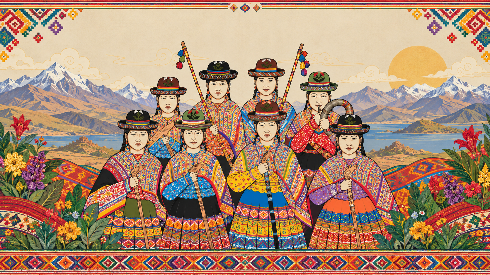
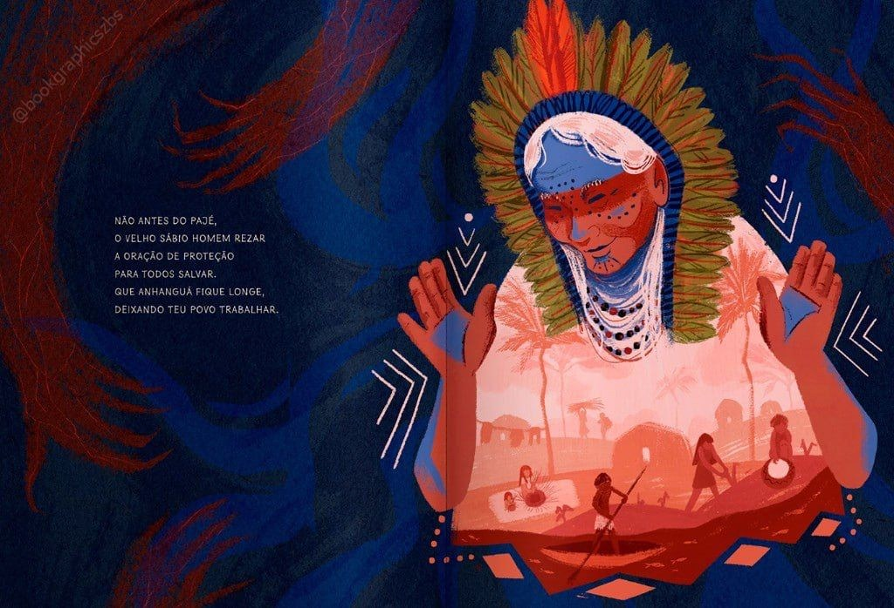

Pregrado
Etnoeducación y Pedagogía Intercultural
Forma educadores capaces de construir puentes entre sistemas de conocimiento y contextos culturales diversos.
Más información
Universidad Intercultural
Un espacio de aprendizaje vivo donde la cultura, los saberes ancestrales,
las comunidades y la naturaleza se encuentran para construir conocimiento juntos.

Pluriversidad · saberes vivos
01 / 04
Aprender desde muchas miradas
Los saberes ancestrales dialogan con la universidad para comprender el presente y cuidar lo que viene.
Explorar programasCuatro rutas del conocimiento
Haz clic en una imagen para descubrir su temática
Oferta académica
Formación universitaria en diálogo con el mundo desde múltiples perspectivas.
Forma educadores capaces de construir puentes entre sistemas de conocimiento y contextos culturales diversos.
Más informaciónIntegra ecología, derecho territorial y cosmovisiones andinas para la defensa y gestión del territorio.
Más informaciónEstudia las lenguas originarias, los medios comunitarios y las narrativas como expresión política y cultural.
Más informaciónProfundiza en epistemologías del sur, pensamiento decolonial y diálogo intercientífico.
Más informaciónExplora las expresiones artísticas como vehículo de memoria, identidad y transformación social.
Más informaciónContáctanos y te orientamos sobre la oferta completa de Pluriversidad y sus extensiones comunitarias.
Consultar◈ CULTURA Y COMUNIDAD
CUATRO FORMAS DE ENCONTRARNOSLa vida universitaria como territorio vivo
Saberes ancestrales
Espacios de encuentro con mayores, curanderos, artesanos y guardianes de tradición que comparten sus saberes dentro de la universidad.
CONOCER MÁSARRASTRA PARA DESCUBRIR
RECTORÍA · PLURIVERSIDAD
Una universidad que aprende
tanto como enseña.
Doctor en Educación Intercultural
Rector Fundador de Pluriversidad
TRAYECTORIA Y COMPROMISO
El Dr. Quispe Huayhua es educador, investigador y defensor de los derechos epistémicos de los pueblos indígenas y campesinos. Con más de veinte años de trayectoria en pedagogía intercultural, lideró la fundación de Pluriversidad como un espacio universitario donde la diversidad cultural no es un complemento, sino el centro del proyecto educativo.
"Pluriversidad nació de la escucha. Escuchar a las comunidades que durante siglos han guardado saberes que el mundo académico tardó demasiado en reconocer. Aquí construimos una universidad que aprende tanto como enseña."
Contacto
Escríbenos, visítanos o cuéntanos tu historia. Somos una universidad que escucha.
Av. del Conocimiento 1420
Región Andina, América del Sur
Lunes a viernes · 8:00 am – 5:00 pm